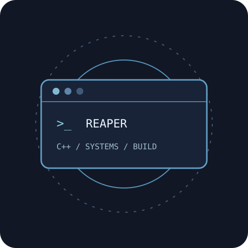

Languages
C++, Python, HTML, CSS, JSON
SIMULATION ENGINEERING · C++ · SYSTEMS
I build practical software and systems tools. As a Simulation Engineering student at Full Sail University, I focus on C++, reliable program logic, Linux-based infrastructure, debugging, and automation.

About Me
I enjoy breaking complicated problems into manageable parts, finding failures, and improving the design until the result is dependable. My current work connects object-oriented C++ development with an interest in operating systems, diagnostics, networking, and distributed computing.
In Project & Portfolio I, I kept the REAPER console application focused instead of trying to rebuild an entire systems platform in four weeks. My goal is to keep developing as a software and systems engineer and contribute to tools that make complex technology easier to operate.
Technical skills
C++, Python, HTML, CSS, JSON
Git, GitHub, Visual Studio, VS Code, CMake, Linux, Docker, Raspberry Pi
Object-oriented design, validation, automated tests, CPU and memory diagnostics, and code organization
Featured course project
A focused Project & Portfolio I application that builds a task-management foundation and adds a small, testable systems-monitoring capability.

C++17 · CMake · Git & GitHub · CTest
REAPER organizes task creation and completion around dedicated C++ classes and a simple console interface. I later expanded it with focused CPU and physical-memory status reporting while keeping the original task-management features maintainable.
The biggest constraint was scope: REAPER began as a much larger systems concept. After instructor feedback, I narrowed the course deliverable to a reliable console foundation, refactored task lookup into a dedicated class, and used regression tests to catch input and status-handling problems. This reinforced the value of clear class responsibilities and testing changes before adding features.
Course source repository is private; source access can be requested for review. A final showcase video is being prepared for Week 4.
Contact
Interested in software engineering, infrastructure, systems diagnostics, and practical development work. Reach me through my professional email or GitHub.